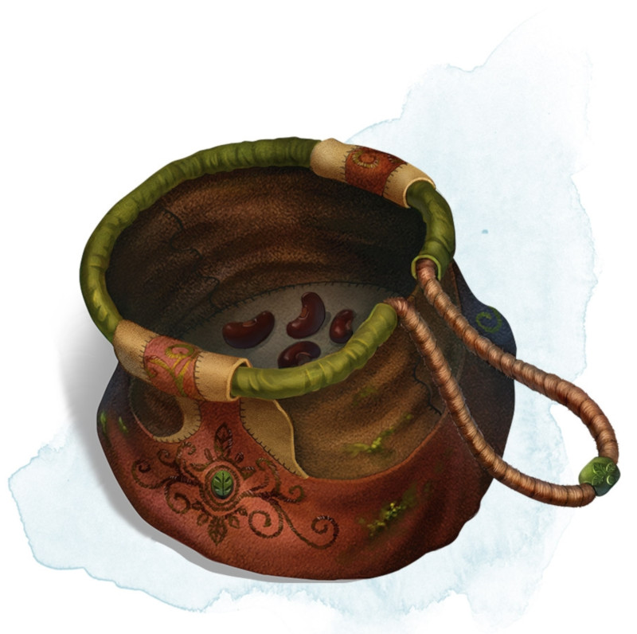

Bag of Beans
[ Sac de haricots ]
Wondrous item, rare
Inside this heavy cloth bag are 3d4 dry beans. The bag weighs 1/2 pound plus 1/4 pound for each bean it contains.
If you dump the bag's contents out on the ground, they explode in a 10-foot radius, extending from the beans. Each creature in the area, including you, must make a DC 15 Dexterity saving throw, taking 5d4 fire damage on a failed save, or half as much damage on a successful one. The fire ignites flammable objects in the area that aren't being worn or carried.
If you remove a bean from the bag, plant it in dirt or sand, and then water it, the bean produces an effect 1 minute later from the ground where it was planted. The DM can choose an effect from the following table, determine it randomly, or create an effect.
If you dump the bag's contents out on the ground, they explode in a 10-foot radius, extending from the beans. Each creature in the area, including you, must make a DC 15 Dexterity saving throw, taking 5d4 fire damage on a failed save, or half as much damage on a successful one. The fire ignites flammable objects in the area that aren't being worn or carried.
If you remove a bean from the bag, plant it in dirt or sand, and then water it, the bean produces an effect 1 minute later from the ground where it was planted. The DM can choose an effect from the following table, determine it randomly, or create an effect.
| d100 | Effect |
|---|---|
| 01 | 5d4 toadstools sprout. If a creature eats a toadstool, roll any die. On an odd roll, the eater must succeed on a DC 15 Constitution saving throw or take 5d6 poison damage and become poisoned for 1 hour. On an even roll, the eater gains 5d6 temporary hit points for 1 hour. |
| 02-10 | A geyser erupts and spouts water, beer, berry juice, tea, vinegar, wine, or oil (DM's choice) 30 feet into the air for 1d12 rounds. |
| 11-20 | A treant sprouts. There's a 50 percent chance that the treant is chaotic evil and attacks. |
| 21-30 | An animate, immobile stone statue in your likeness rises. It makes verbal threats against you. If you leave it and others come near, it describes you as the most heinous of villains and directs the newcomers to find and attack you. If you are on the same plane of existence as the statue, it knows where you are. The statue becomes inanimate after 24 hours. |
| 31-40 | A campfire with blue flames springs forth and burns for 24 hours (or until it is extinguished). |
| 41-50 | 1d6 + 6 shriekers sprout. |
| 51-60 | 1d4 + 8 bright pink toads crawl forth. Whenever a toad is touched, it transforms into a Large or smaller monster of the DM's choice. The monster remains for 1 minute, then disappears in a puff of bright pink smoke. |
| 61-70 | A hungry bulette burrows up and attacks. |
| 71-80 | A fruit tree grows. It has 1d10 + 20 fruit, 1d8 of which act as randomly determined magic potions, while one acts as an ingested poison of the DM's choice. The tree vanishes after 1 hour. Picked fruit remains, retaining any magic for 30 days. |
| 81-90 | A nest of 1d4 + 3 eggs springs up. Any creature that eats an egg must make a DC 20 Constitution saving throw. On a successful save, a creature permanently increases its lowest ability score by 1, randomly choosing among equally low scores. On a failed save, the creature takes 10d6 force damage from an internal magical explosion. |
| 91-99 | A pyramid with a 60-foot-square base bursts upward. Inside is a sarcophagus containing a mummy lord. The pyramid is treated as the mummy lord's lair, and its sarcophagus contains treasure of the DM's choice. |
| 00 | A giant beanstalk sprouts, growing to a height of the DM's choice. The top leads where the DM chooses, such as to a great view, a cloud giant's castle, or a different plane of existence. |
Dungeon Master´s Guide (SRD)
